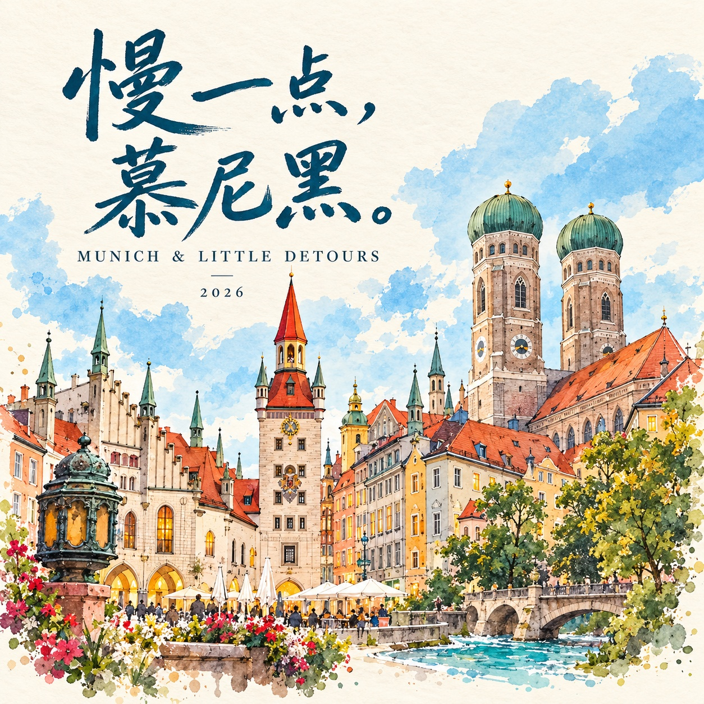
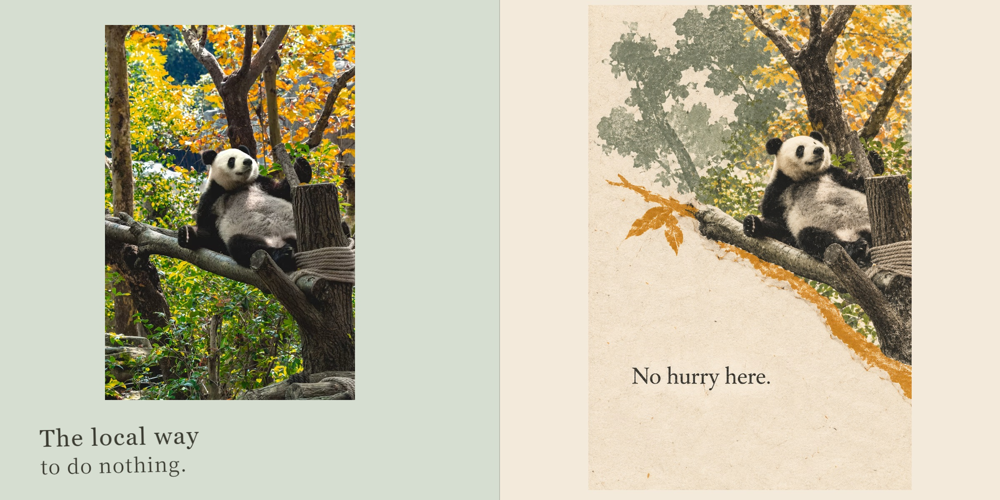

YOUR PHOTOS, A LITTLE MORE LOVED.
把照片，做成一份
舍不得合上的礼物。
给喜欢的人，给小猫，也给一段不想忘记的旅程。
照片、文字、专属封面和一点想象力，慢慢成为一本书。

今天也很会偷懒
猫咪日常 · 6张照片翻开小毛球的日子 →
和你，慢慢来
情侣日记 · 10张照片翻开一封小情书 →
慢一点，慕尼黑
旅行纸刊 · 17张照片翻开下一次出发 →
Slow Days in Chengdu
英文旅行日记 · 17张照片Take your time →选中的照片，都好好放进书里文字和排版，跟着故事走内页完成，再画专属封面
LITTLE DAYS, BEAUTIFULLY KEPT.
有大图，也有小小的日常。
留白、竖排、拼贴、旁白和手绘贴纸，让每一段故事有自己的表情。

一个哈欠，一次巡逻，也值得认真留一页。

一起坐车、一起发呆，把普通的日子写成喜欢的样子。
FOUR WAYS TO KEEP A FEELING.
照片之外，还能留住一点感觉。
只在合适的地方，加一页特别的。四种创意路线，已经用在上面的相册里。


原照留下真实，撕纸和插画把河流接着画下去。

No hurry here. 同一个skill，也能写一本英文旅行日记。
你的下一本，会是什么故事？
安装Skill，把照片和几句描述交给Codex。从一个小样开始，慢慢做完整本。
“使用 $photo-book-studio，
我想做一本关于我们这一年的相册。”